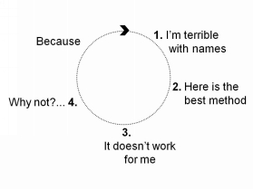

“The mind is the limit. As long as the mind can envision the fact that you can do something, you can do it – as long as you believe 100 percent.”
~ Arnold Schwarzenegger
There was once a fish that lived in a pond. One day, he met another fish that used to live in the sea. The pond fish asked, “What is the sea?” and the sea fish said, “It is a vast amount of water that is a million, million times bigger than your pond.” The pond fish never talked to the sea fish again because he thought the sea fish was a liar.
What can we learn from this?
Your beliefs of what your concentration and memory can do may be your own limited version of the truth. Many people never get a taste of their true potential because they have decided to entertain only a limited view of what they can do.
What if your negative beliefs about your concentration, your memory, and your potential were not true at all? Who would you be without these beliefs?
Richard Bandler said, “Beliefs aren’t about truth. Beliefs are about believing. They are guides for our behavior.” We always defend what we believe. If you believe you have a bad memory, you will always act and think in accordance with that belief. Where your attention goes, your energy flows.
If you want to improve your memory and concentration, you need to create a belief system that supports them.
Imagine there is an Earth 1 and an Earth 2. The planets are the same in every way, but... they are in different dimensions.
On Earth 1 lives Mr. A and on Earth 2 lives Mr. B.
They look the same, they speak the same way, they live in the same environment, they have the same education, and they even have the same brain and nervous system. Everything is the same. There is only one thing that separates them.
Mr. A believes that he has a terrible memory. He always tells people:
“My attention is all over the place; it is like a kangaroo hopping around my mind.”
“I’m always forgetting things.”
“I’m terrible with names.”
“My memory is getting worse every day.”
“My memory is full.”
“My memory is like a sieve.”
“I’m stupid.”
“Your brain will fill up – so don’t learn too much!”
He hates learning. He is not interested in remembering because he thinks he will forget.
Mr. B believes he has a wonderful memory; in fact, an exceptional memory. He always says:
“I choose to focus my attention; it is like a laser beam.”
“Memory improvement is important.”
“Look how much I remember: I have quadrillions of memories stored in my mind.”
“My memory is getting better and better every day.”
“I’m interested in remembering names.”
“I’m brilliant.”
“My memory has the ability to store and recall mountains of information. It is the only container with this characteristic: the more I put into it, the more it will hold.”
He loves learning. He wants to remember and train his mind.
Now, who do you think will have the better memory? Of course: Mr. B.
The only difference between Mr. A and Mr. B is their beliefs. Whose beliefs do you think are right?
The answer is that they are both right. It is only our thinking that makes things right or wrong. Mr. A and Mr. B both have beliefs, and they both have experiences or thoughts to back it up. The only difference is that Mr. A’s focus is negative and disempowering. He sets himself up to fail.
Mr. B’s focus is positive and empowering. He sets himself up for success. Both Mr. A and Mr. B choose their own beliefs. It isn’t an outside influence that determines their outcome. We all have the freedom to choose what we focus on and in the end, it will determine the beliefs we carry around with us.
A belief is a sense of being certain and what you believe, you become.
Negative beliefs and thoughts place a block on your concentration and memory. Unless you decide to take responsibility and change the thoughts that you are constantly feeding yourself, you will not be able to break through your negative conditioning. Every single thought we have is creative: it has the power to build and the power to destroy.
Most people don’t realize that when they use doubtful phrases they are setting standards for themselves. These standards become expectations and in the end will become self-fulfilling prophecies.
Here is an example of what happens with a negative belief frame:

Your mind will loop and prevent you from learning anything new. Your beliefs either move you or stop you. In brief, every thought and every word works for you or against you, and every thought that you confirm to be true multiplies and becomes a belief. When you change a belief you change a mental construction and, therefore, your life. In other words, we believe what we have been taught to believe, and we don’t question beliefs because we don’t want to question the source. Begin to ask yourself, “Who will I be doubting by changing my beliefs about my mind, concentration, and memory and why do I think this is true?”
People tend to think that their beliefs are absolutely true, but these beliefs are only true for them. Just because you can’t do something well doesn’t mean it is impossible. Identify your self-limiting beliefs and then ask, “What if they were not true at all?” and remember the limits in your belief system will always stop you from seeing any alternatives that should be obvious.
If you choose to change your beliefs, here is how you can do it:
First, 80% of changing anything is about why you want to change and only 20% is about how you do it. Take responsibility; it is as simple as having a reason and making a decision that you want to change your beliefs.
Second, question the belief. There are some things that you previously believed with all your heart but now you don’t believe them. Why? Because you questioned them. If, long ago, some teacher told you that you have a memory like a sieve, it doesn’t mean you have to make the teacher’s words true or a reality. You were younger then, had less experience, and did not have the ability to question authority. Now with age comes the advantage that you can question his or her judgment of your younger self. Ask yourself questions like, “How much is this belief going to cost me if I hold on to it? Do I have to hold on to it? Is it true? Can I be 100% certain that it is the truth?”
Third, create a new belief and think of experiences, research, and thoughts to confirm it. When you change your beliefs, you allow yourself to experience more of your potential and create new possibilities.
Fourth, use the new belief often and make it part of your identity.
Your beliefs are only the stories that you have accepted to be true about yourself… just decide to change the stories.
Spenser Lord said, “Beliefs are not tattoos, they are just like clothes – you can put them on and take them off at will.” Thus, here are five core beliefs that you can ‘put on’ right now: